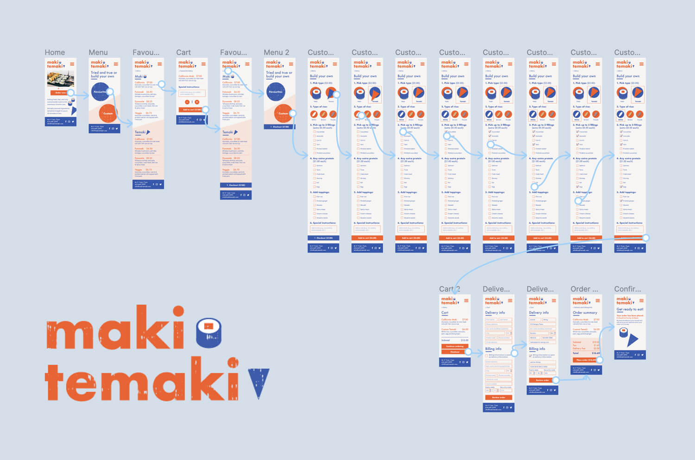
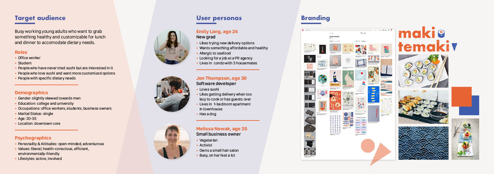
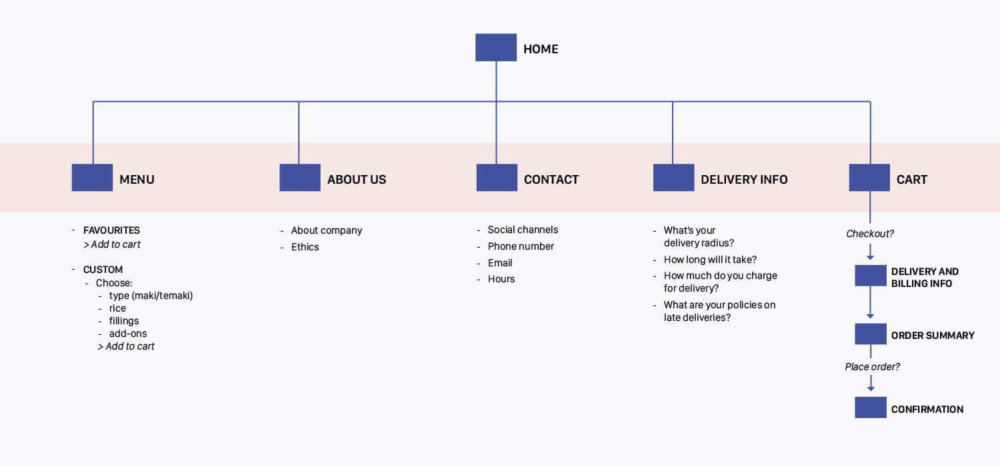
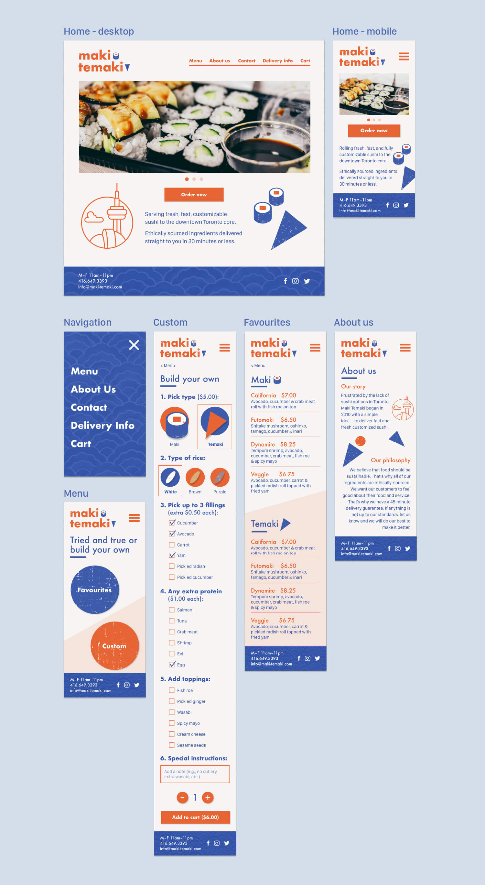
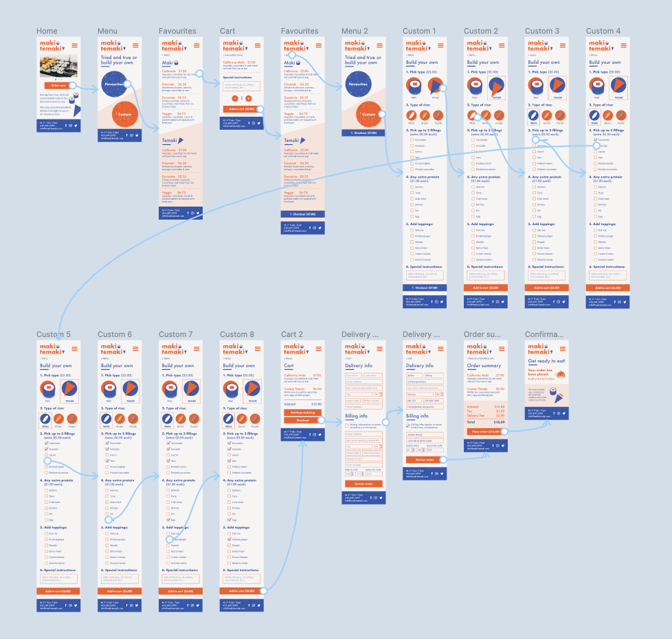

Maki Temaki
UI/UX, Strategy, User Research, Branding, Web Design, Prototyping, Testing

Outline
I created a responsive website for ordering and delivery of customizable sushi rolls. This project was completed as part of the UI/UX Specialization from California Institute of the Arts. I worked on everything from strategy, planning, information architecture, branding, wireframes, mockups, and prototypes.
Process
I began by detailing Maki Temaki’s products, delivery radius, and sushi customizations. After gaining an understanding of Maki Temaki's services, I defined their target audience and created user personas to understand the customer base. Understanding users' needs, experiences, and behaviours helped influence the strategy and branding. I wanted Maki Temaki's brand to be bold, engaging, and simple to appeal to young adults. For the logo, I played with basic shapes to represent maki (sushi rolls) and temaki (hand rolls).
To determine the information architecture for the website, I outlined user needs and client needs. This informed the content and functionality requirements for the website and was used to develop a site map.
Target audience, user personas, branding

Site map

Creating an intuitive flow for the ordering and checkout process was the biggest challenge. I wanted everything to be seamless and easy-to-use. After creating wireframes, I made high-fidelity mockups on Figma and prototyped and tested the ordering process so it would be ready for development.
Prototype of ordering process
Close-up of screens

Ordering process flow

 all projects
all projects